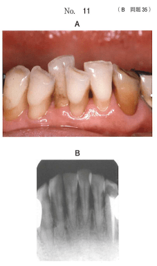

暫間固定（temporary splint）とは、一定期間、動揺歯や外傷性咬合力を受けている歯を隣接の歯と連結することにより、当該歯の歯周組織に対する咬合力の分散と安静を図り、咬合性外傷の改善や破壊的な力を回避するために行う治療法。
外側性（外式）固定：歯質の外側に固定を求める
内側性（内式）固定：歯質の内側に固定を求める（すべて固定式）
| 固定法 | 分類 | 特徴 |
|---|---|---|
| エナメルボンディングレジン固定 | 外側性・固定式 | 歯質削除が最小限、審美性良好、DBS法とも呼ばれる |
| 舌面板接着固定 | 外側性・固定式 | 金属板を舌側に接着、永久固定にも使用 |
| ワイヤー結紮レジン固定 | 外側性・固定式 | Sorrin法、現在はあまり使用されない |
| A-スプリント | 内側性・固定式 | MOD窩洞形成が必要、固定力強い |
| プロビジョナル固定 | 内側性・固定式 | 支台歯形成が必要、永久固定への移行用 |
| オクルーザルスプリント | 外側性・可撤式 | 着脱可能、ブラキシズム治療にも使用 |
| 条件 | 推奨される固定法 |
|---|---|
| 前歯部・審美性重視 | エナメルボンディングレジン固定 |
| 歯質が薄い（下顎前歯など） | 外側性固定（内側性は窩洞形成で歯質削除大） |
| 強固な固定が必要 | 内側性固定（A-スプリントなど） |
| 永久固定への移行予定 | プロビジョナル固定 |
注意：暫間固定の期間は1か月〜1年程度。改善状態を観察し、固定継続・永久固定移行・固定除去を判断する。
暫間固定を行う下顎前歯部の口腔内写真（別冊No.11A）とエックス線画像（別冊No.11B）を別に示す。
適切な方法はどれか。1つ選べ。

【解説】下顎前歯部は歯質が薄いため、窩洞形成を要する内側性固定（A-スプリント、プロビジョナル固定）は不適切。エナメルボンディングレジン固定は歯質削除が最小限で、審美性も良好なため最適。連結前装冠は永久固定であり暫間固定ではない。